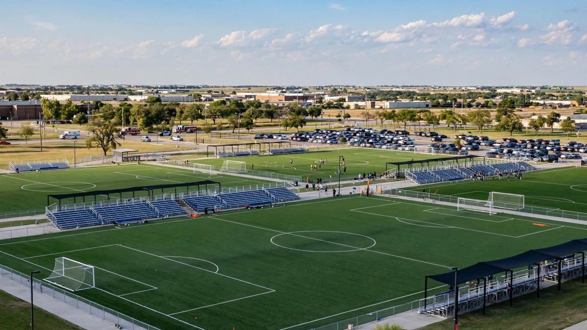

विचिटा फुटबल मैदानमा गाडी प्रवेश गर्दा बालक र वयस्कको मृत्यु
शनिबार दिउँसो करिब ३:२५ बजे क्यान्ससको विचिटास्थित स्ट्राइकर स्पोर्ट्स कम्प्लेक्समा युवा फुटबल खेलका क्रममा एउटा गाडी मैदानमा प्रवेश गर्दा ६ वर्षका बालक र ३५ वर्षका पुरुषको मृत्यु भयो र अरू ११ जना घाइते भए। चालक, ३४ वर्षकी महिला, हिरासतमा रहेको प्रहरीले भन्यो।

मुख्य बुँदाहरू
- अद्यावधिक ००:४९ UTC, अक्टोबर २०, २०२६। विचिटा सहरले अक्टोबर १९, २०२६ मा भन्यो कि पब्लिक वर्क्स एन्ड युटिलिटिजका टोलीहरूले स्ट्राइकर स्पोर्ट्स कम्प्लेक्स वरपरका मुख्य ठाउँहरूमा अस्थायी अवरोधहरू…
- अद्यावधिक २२:२३ UTC, अक्टोबर १९, २०२६। विचिटा प्रहरीले यस हप्ताको सुरुमा सेजविक काउन्टीका डिस्ट्रिक्ट अटर्नी मार्क बेनेटलाई मुद्दाको प्रारम्भिक प्रस्तुति दिनेछ, डिस्ट्रिक्ट अटर्नीको कार्यालयले…
- अद्यावधिक २१:३६ UTC, अक्टोबर १८, २०२६। विचिटा प्रहरीले आइतबार चालकलाई हिरासतबाट छाड्यो। उनको पिकअपले स्ट्राइकर स्पोर्ट्स कम्प्लेक्सको युवा फुटबल मैदानमा छिरेर दुई जनाको ज्यान लिएको एक दिनपछि यो…
अद्यावधिक ००:४९ UTC, अक्टोबर २०, २०२६। विचिटा सहरले अक्टोबर १९, २०२६ मा भन्यो कि पब्लिक वर्क्स एन्ड युटिलिटिजका टोलीहरूले स्ट्राइकर स्पोर्ट्स कम्प्लेक्स वरपरका मुख्य ठाउँहरूमा अस्थायी अवरोधहरू राख्न थालेका छन्, र विचिटा प्रहरी विभाग, पब्लिक वर्क्स एन्ड युटिलिटिज, पार्क्स एन्ड रिक्रिएसन र स्ट्राइकर व्यवस्थापनले स्थलको प्रारम्भिक सुरक्षा मूल्याङ्कन गरिरहेका छन्। ती अवरोधहरू थप स्थायी समाधान नआएसम्म रहनेछन्, सहरले भन्यो। कम्प्लेक्स अक्टोबर १९, २०२६ मा दिउँसो ३ बजे फेरि खुल्यो, र कार्यक्रमबारे विशेष जानकारी स्ट्राइकरको फेसबुक पेजमा राखिनेछ। समुदायका लागि कुनै निरन्तर खतरा नरहेको र आउँदो सप्ताहन्तमा प्रहरी अधिकारीहरू स्थलमा रहने प्रहरीले भन्यो। आफू वा आफ्ना बालबालिकाका लागि मानसिक स्वास्थ्य सहयोग खोज्ने जोकोहीका लागि सेजविक काउन्टी COMCARE का कर्मचारी सोमबारदेखि बुधबारसम्म साँझ ५:३० बजेदेखि १० बजेसम्म स्थलमा रहनेछन्, सहरले भन्यो।
अद्यावधिक २२:२३ UTC, अक्टोबर १९, २०२६। विचिटा प्रहरीले यस हप्ताको सुरुमा सेजविक काउन्टीका डिस्ट्रिक्ट अटर्नी मार्क बेनेटलाई मुद्दाको प्रारम्भिक प्रस्तुति दिनेछ, डिस्ट्रिक्ट अटर्नीको कार्यालयले अक्टोबर १९, २०२६ मा भन्यो। "त्यो प्रारम्भिक समीक्षापछि हाम्रो कार्यालयले उपयुक्त जानकारी बाँड्नेछ", प्रवक्ता लिन्डसी स्टोभरले USA Today लाई भनिन्। प्रहरी प्रवक्ता एन्ड्रु फोर्डले प्रहरीले अझै विष परीक्षणको रिपोर्ट वा गाडीको जाँचबारे जानकारी नपाएको र दुर्घटनाका बेला महिला आफैंले गाडी चलाइरहेकी थिइन् वा गाडी आफैं चलिरहेको थियो भन्ने कुरा अनुसन्धानको भाग भएकाले सार्वजनिक नगरिने बताए। कुनै आरोप लगाइएको छैन।
अद्यावधिक २१:३६ UTC, अक्टोबर १८, २०२६। विचिटा प्रहरीले आइतबार चालकलाई हिरासतबाट छाड्यो। उनको पिकअपले स्ट्राइकर स्पोर्ट्स कम्प्लेक्सको युवा फुटबल मैदानमा छिरेर दुई जनाको ज्यान लिएको एक दिनपछि यो निर्णय आएको हो। अनुसन्धानकर्ताहरूले सेजविक काउन्टी डिस्ट्रिक्ट अटर्नीको कार्यालयसँग परामर्श गरे र विष परीक्षण तथा गाडीको यान्त्रिक जाँच बाँकी रहेकाले ३४ वर्षीया महिलालाई छाडिएको प्रहरीले भन्यो। कुनै आरोप लगाइएको छैन।
प्रहरीले मारिएका दुई जनाको नाम कोल एड्रियन, ६ वर्ष, र निकोलस सेफर, ३५ वर्ष, दुवै म्याकफर्सनका भनेर सार्वजनिक गर्यो। प्रारम्भिक अनुसन्धानअनुसार पिकअप फुटबल मैदान नजिकको ठाउँमा पार्क गरिएको थियो र त्यसपछि एउटा मैदानमा छिरेको थियो। दस जनालाई विचिटाका अस्पतालहरू लगियो, उनीहरूका चोटलाई प्रहरीले गम्भीर नभएको भन्यो, र अर्की एक महिलालाई आघातसँग सम्बन्ध नभएको स्वास्थ्य समस्यापछि अस्पताल लगियो। प्रहरीका अनुसार अनुसन्धानकर्ताहरूले पिकअपभित्र रहेका दुई नाबालकसहित ३० भन्दा बढी साक्षीसँग कुरा गरेपछि चालकसँग सोधपुछ गरेर छाडेका हुन्। महिलाको अर्को बच्चा कम्प्लेक्सको फरक मैदानमा फुटबल खेलिरहेको थियो। प्रहरीले घटनाको भिडियो भएकाले अनुसन्धानकर्ताहरूसँग बाँड्न आग्रह गर्यो। "बालबालिकाले फुटबल खेल्ने र परिवारले सँगै समय बिताउने दिन हुनुपर्ने दिन त्रासदीमा टुंगियो", प्रहरी प्रमुख जो सुलिभानले विज्ञप्तिमा भने।
अद्यावधिक ०३:५१ UTC
प्रहरीले मृत्यु भएका र घाइते भएका व्यक्तिहरूबारे थप विवरण दिएको छ। ६ वर्षका बालक र ३५ वर्षका पुरुष दुवै क्यान्ससको म्याकफर्सनका थिए र उनीहरू नातेदार थिएनन्, क्याप्टेन आरोन मोजेसले १७ अक्टोबर २०२६ को साँझको पत्रकार सम्मेलनमा भने। उनीहरूको नाम सार्वजनिक गरिएको छैन। चालक क्यान्ससको गार्डेन सिटीकी ३४ वर्षकी महिला हुन्। उनीसँग वैध लाइसेन्स रहेको र उनीविरुद्ध कुनै वारेन्ट नरहेको प्रहरीले भन्यो। उनी हिरासतमा छिन् र सहयोग गरिरहेकी छिन्, र मुद्दा चलाउनु उपयुक्त हुन्छ कि हुँदैन भन्ने निर्णय गर्न जिल्ला सरकारी वकिलसँग काम गर्ने प्रहरीले भन्यो।
अस्पताल लगिएका ११ जनामध्ये १० जनालाई चोट लागेको प्रहरीले भन्यो। उनीहरू पाँच बालबालिका, ५ वर्षकी बालिका, ५ वर्षका बालक, ८ वर्षका दुई बालक र ९ वर्षकी बालिका, र पाँच वयस्क, २८ वर्षकी महिला, ३२ वर्षका पुरुष, ५९ वर्षकी महिला, ६५ वर्षकी महिला र ६८ वर्षका पुरुष थिए। ११औं व्यक्ति, ६१ वर्षकी महिला, चोटसँग नजोडिएको स्वास्थ्य समस्याका कारण अस्पताल लगिएकी थिइन्। चोटहरू सामान्य निलडामदेखि अत्यन्त गम्भीरसम्म रहेको र कुनै पनि चोट ज्यान जाने खालको नभएको विश्वास गरिएको प्रहरीले भन्यो।
जासूसहरूले ३० जनाभन्दा बढी साक्षीसँग कुराकानी गरिसकेको प्रहरीले भन्यो, र उनीहरूले कम्प्लेक्सको निगरानी भिडियो हेर्नेछन्। शनिबार कम्प्लेक्समा भिडियो वा फोटो खिचेका जोकोहीलाई ती अनुसन्धानकर्ताहरूलाई बुझाउन प्रहरीले आग्रह गरेको छ। "आज विचिटाका लागि हृदयविदारक दिन हो," मेयर लिली वूले भनिन्। "परिवारहरू शनिबार दिउँसो आफ्ना बच्चाहरूले फुटबल खेलेको हेर्न स्ट्राइकर स्पोर्ट्स कम्प्लेक्स आएका थिए र यस्तो दुःखद घटना होला भनेर कसैले कल्पना गर्न सकेको थिएन।" म्याकफर्सनमा मेयर जिम लभिङले भने: "आज राति म्याकफर्सन शोकमा छ।"
अद्यावधिक ०१:५१ UTC
प्रहरीले अब मृत्यु भएका दुई जनाको उमेर र घाइतेको संख्या दिएको छ। मृत्यु भएका बालक ६ वर्षका र पुरुष ३५ वर्षका थिए, क्याप्टेन आरोन मोजेसले भने। उनीहरू एकअर्काका नातेदार थिएनन्, र दुवैलाई घटनास्थलमै मृत घोषित गरियो। अरू ११ जनालाई अस्पताल लगियो। घाइतेमध्ये १० जनालाई चोट लागेको तर ती चोट ज्यान जाने खालका नभएको विश्वास गरिएको प्रहरीले भन्यो, र घाइतेमध्ये बालबालिका पनि छन्।
चालक ३४ वर्षकी महिला हुन्, मोजेसले भने। उनको आफ्नै बच्चा कम्प्लेक्सको अर्को मैदानमा फुटबल खेलिरहेको थियो, र उनको गाडीभित्र दुई नाबालिग थिए। उनी हिरासतमा छिन् र अनुसन्धानकर्ताहरूसँग सहयोग गरिरहेकी छिन्, प्रहरीले भन्यो। के भयो र किन भयो, र मुद्दा दायर हुन्छ कि हुँदैन भन्ने अधिकारीहरूले अझै पत्ता लगाइरहेका छन्।
स्ट्राइकर स्पोर्ट्स कम्प्लेक्सका सबै कार्यक्रम अर्को सूचना नआएसम्म रद्द गरिए, कम्प्लेक्सले भन्यो। क्यान्सस राज्य हाई स्कुल गतिविधि संघले फ्ल्याग फुटबलको तेस्रो स्थान र च्याम्पियनसिप खेल पछिको मितिसम्म स्थगित गरिएको र विवरण सोमबार, १९ अक्टोबर २०२६ मा दिइने भन्यो।
शनिबार दिउँसो क्यान्ससको विचिटास्थित स्ट्राइकर स्पोर्ट्स कम्प्लेक्समा फुटबल खेल चलिरहेका बेला एउटा गाडी मैदानमा प्रवेश गर्दा एक बालक र एक वयस्क गरी दुई जनाको मृत्यु भयो। अरू धेरै जना घाइते भए र अस्पताल लगिए। चालकलाई हिरासतमा लिइयो, र प्रहरीले जनताका लागि अब कुनै निरन्तर खतरा नरहेको भन्यो।
सेजविक काउन्टीका डिस्प्याचरहरूले दिउँसो करिब ३:२५ बजे स्थानीय समयमा एउटा गाडी फुटबल खेल हुँदै गएको भन्ने धेरै ९११ कल पाए, विचिटा प्रहरीका क्याप्टेन आरोन मोजेसले पत्रकार सम्मेलनमा भने। विचिटा प्रहरी विभागले X मा एउटा गाडी संलग्न धेरै हताहती भएको घटना अनुसन्धान गरिरहेको जनायो।
साक्षीहरूले के देखे
एक साक्षीले स्थानीय स्टेशन KWCH लाई कालो पिकअप ट्रक युवा फुटबल मैदानहरू हुँदै गएको, धेरै मानिसलाई ठक्कर दिएको र मैदानमा करिब १०० देखि २०० गज पर गएर रोकिएको बताए। साक्षीले घटनास्थलमा दर्जनौं उद्धारकर्मीले CPR सहित चिकित्सा सहायता दिएको वर्णन गरे। घटना हुँदा मैदानमा परिवार र बालबालिका थिए, साक्षीहरूले स्टेशनलाई भने।
मोजेसले गाडी कम्प्लेक्स हुँदै जाँदा भित्र दुई जना नाबालिग रहेको बताए। गाडी घटनास्थलमै रह्यो। प्रहरी अधिकारी, अन्य स्थानीय निकाय, विचिटा दमकल विभाग र सेजविक काउन्टी आपत्कालीन चिकित्सा सेवा सबै घटनास्थल पुगे।
प्रहरीलाई अझै थाहा नभएको कुरा
प्रहरीले मृत्यु भएका दुई जनाको पहिचान गरेको थिएन, र नाम वा उमेर सार्वजनिक गर्नुअघि उनीहरूका परिवारलाई जानकारी दिन काम गरिरहेको थियो। घाइतेको संख्या र उनीहरूको अवस्था शनिबार दिउँसो उपलब्ध थिएन।
मोजेसले गाडी कति गतिमा थियो वा मैदानमा कसरी प्रवेश गर्यो भन्ने अझै स्पष्ट नभएको बताए। चालकले जानीजानी गरेको हो वा होइन भन्ने अधिकारीहरूले पुष्टि गरेका थिएनन्। कम्प्लेक्समा बार लगाइएको छ, र पार्किङतर्फ जाने कंक्रिट बाटो छ, KWCH ले जनाएको छ।
प्रहरीले घटनास्थलमा काम गरिरहेका बेला कम्प्लेक्सको छेउको मैदानमा चलिरहेको फ्ल्याग फुटबल राज्य च्याम्पियनसिपका खेलहरू स्थगित गरिए, क्यान्सस राज्य हाई स्कुल गतिविधि संघले विज्ञप्तिमा भन्यो।
प्रहरीले शनिबार साँझ थप जानकारीसहित अर्को पत्रकार सम्मेलन गर्ने अपेक्षा रहेको भन्यो। अधिकारीहरूले थप विवरण सार्वजनिक गरेपछि यो समाचार अद्यावधिक गरिनेछ।
स्रोतहरू
CNN, USA Today र Fox News ले शनिबार मृत्यु, समय, चालकको हिरासत र प्रहरी पत्रकार सम्मेलनबारे रिपोर्ट गरे।
समयरेखा
- Oct 17, 2026दिउँसो करिब ३:२५ बजे स्थानीय समयमा, सेजविक काउन्टीका डिस्प्याचरहरूले क्यान्ससको विचिटास्थित स्ट्राइकर स्पोर्ट्स कम्प्लेक्समा एउटा गाडी फुटबल खेल हुँदै गएको भन्ने धेरै ९११ कल पाउँछन्।
- Oct 17, 2026विचिटा प्रहरीका क्याप्टेन आरोन मोजेसले एक बालक र एक वयस्कको मृत्यु भएको, अरू धेरै घाइते भएको, चालक हिरासतमा रहेको र कुनै निरन्तर खतरा नरहेको बताउँछन्। गाडीभित्र दुई नाबालिग थिए, र गाडी घटनास्थलमै रह्यो।
- Oct 17, 2026१७ अक्टोबर २०२६ मा पछि दिइएको जानकारीमा प्रहरीले मृत्यु भएका दुई जना ६ वर्षका बालक र ३५ वर्षका पुरुष भएको, अरू ११ जना घाइते भएको र चालक, ३४ वर्षकी महिला, हिरासतमा रहेर सहयोग गरिरहेको बताएको छ।
- Oct 17, 2026१७ अक्टोबर २०२६ को साँझको जानकारीमा प्रहरीले मृत्यु भएका दुवै जना म्याकफर्सनका भएको, चालक गार्डेन सिटीकी ३४ वर्षकी महिला भएको र उनीसँग वैध लाइसेन्स रहेको र कुनै वारेन्ट नरहेको, जासूसहरूले ३० जनाभन्दा बढी साक्षीसँग कुराकानी गरेको, र अस्पताल लगिएका घाइतेहरूमा चोट लागेका ५ देखि ९ वर्षका पाँच बालबालिका, २८ देखि ६८ वर्षका पाँच वयस्क र चोटसँग नजोडिएको स्वास्थ्य समस्या भएकी ६१ वर्षकी महिला रहेको बताएको छ।
- Oct 18, 2026विचिटा प्रहरीले मारिएका दुई जनाको नाम कोल एड्रियन, ६ वर्ष, र निकोलस सेफर, ३५ वर्ष, दुवै म्याकफर्सनका भनेर सार्वजनिक गर्छ र विष परीक्षण तथा गाडीको यान्त्रिक जाँच बाँकी रहेकाले चालकलाई हिरासतबाट छाड्छ। कुनै आरोप लगाइएको छैन।
- Oct 19, 2026विचिटा प्रहरीले यस हप्ताको सुरुमा सेजविक काउन्टीका डिस्ट्रिक्ट अटर्नी मार्क बेनेटलाई मुद्दाको प्रारम्भिक प्रस्तुति दिनेछ, डिस्ट्रिक्ट अटर्नीको कार्यालयले अक्टोबर १९, २०२६ मा भन्छ। प्रहरीले अझै विष परीक्षणको रिपोर्ट वा गाडीको जाँचको नतिजा नपाएको बताएको छ।
- Oct 19, 2026विचिटा सहरले अक्टोबर १९, २०२६ मा पब्लिक वर्क्स एन्ड युटिलिटिजका टोलीहरूले स्थलको प्रारम्भिक सुरक्षा मूल्याङ्कनका क्रममा स्ट्राइकर स्पोर्ट्स कम्प्लेक्स वरपरका मुख्य ठाउँहरूमा अस्थायी अवरोधहरू राख्न थालेको र कम्प्लेक्स त्यही दिन दिउँसो ३ बजे फेरि खुलेको बताएको छ। ती अवरोधहरू थप स्थायी समाधान नआएसम्म रहनेछन्।
स्रोतहरू
- CNN: 2 killed, multiple injured after vehicle drives onto field during soccer game at Wichita sports complex
- USA Today: 2 dead, multiple hurt after truck strikes crowd at Kansas soccer field
- Fox News: Child among 2 killed after vehicle drives onto soccer field at Kansas sports complex
- Reuters: Vehicle drives through Kansas soccer game, killing two, including a child, police say
- Ad Astra Radio: 6-year-old boy, 35-year-old man, both of McPherson, killed in Saturday tragedy at Stryker Sports Complex
- Citizen Journal: Two from McPherson die at Wichita youth soccer game
- KSNW: Driver released from custody after 2 killed, more injured in crash at Kansas soccer field
- USA Today: A truck barreled into a youth soccer game. Why was the driver freed?
- Fox News: Driver released without charges after pickup kills boy, 6, and man on Kansas soccer field
- City of Wichita: News Flash update on Stryker Sports Complex, Oct 19, 2026
- KMUW via KRPS: Police: No charges filed against driver who killed 2, injured 10 at Wichita sports complex